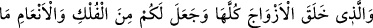
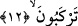
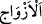
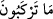
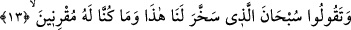

12. Bütün çiftleri O yaratmıştır. Ve size bineceğiniz gemiler ve hayvanlar var
etmiştir.
“Bütün çiftleri” sınıf sınıf “O yaratmıştır.” Allah Teâlâ şöyle buyuruyor: “Ne
yücedir O (Allah) ki toprağın bitirdiklerinden, kendilerinden ve daha bilmedikleri
nice şeylerden olan bütün çiftleri yaratmıştır.” (Yâsîn, 36/36) Bunlardan hiç biri
Allah’ın îcâd ve yaratması dışında değildir. Abdullah b. Abbas (r.a.)’dan buradaki “__WORD__/ezvâc”ın bölüm ve çeşitler olduğu rivâyet edilmektedir. Bunlar tatlı, acı, ekşi,
beyaz, siyah, erkek, dişi gibi bölüm ve çeşitlerdir. Allah’tan başka her şeyin çift olduğu
da söylenmiştir. Bunlar üst-alt, sağ-sol, ön-arka, mâzî-müstakbel, zat-sıfat, yer-gök,
kara-deniz, güneş-ay, gece-gündüz yaz-kış, cennet-cehennem ve daha sayılamayacak
kadar nice çift unsurlardır. İşte bunların hep böyle çift olmaları, bunların varlıklarının
mümkün olduğuna ve bunları yaratanın bir ve tek olup bu türlü mukabil ve muârız
unsurlardan münezzeh olduğuna delâlet eder.
“Ve size” denizde “bineceğiniz” yürüyüp yüzen “gemiler ve” karada bineceğiniz
“hayvanlar”, deve ve dört ayaklı binek hayvanları “var etmiştir.” Burada beyan olarak
getirilen “fülk” ve “en’âm” kelimelerinin beyan olunan konumundaki “__WORD__/mâ
terkebûn” üzerine takdim edilerek daha önce zikredilmesi “nûn” harfiyle biten âyet
sonlarındaki fâsıla ve uyumu korumak içindir. “Fülk”/geminin “en’âm” üzerine takdimi
ise, geminin Allah’ın yüce kudretine ve sonsuz hikmetine daha çok delâlet etmesinden
dolayıdır.
13. Böylece onların sırtına binip üzerlerine yerleşince, Rabbinizin ni’metini
anarak: Bunu bizim hizmetimize vereni tesbih ve takdis ederiz, yoksa biz bunlara
güç yetiremezdik, diyesiniz.
“Böylece onların” gemilerin ve hayvanların “sırtına binip üzerlerine yerleşince,
Rabbinizin” sizin üzerinize olan “nimetini anarak” büyük bir hayranlıkla, “bunu”
binilen bu gemiyi, hayvanları ve diğer binek vasıtalarını “bizim hizmetimize vereni
tesbih ve takdis ederiz, yoksa biz bunlara güç yetirmezdik”, buna muktedir olamazdık,
“diyesiniz.”
“Gemi ve hayvanların sırtları” ifâdesindeki “sırtlar” kelimesi hayvanlar için hakîkat
mânâsında olup gemi için bu mânâda değildir. Bu ifâde gramer açısından hayvanların